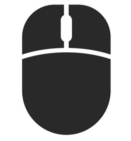
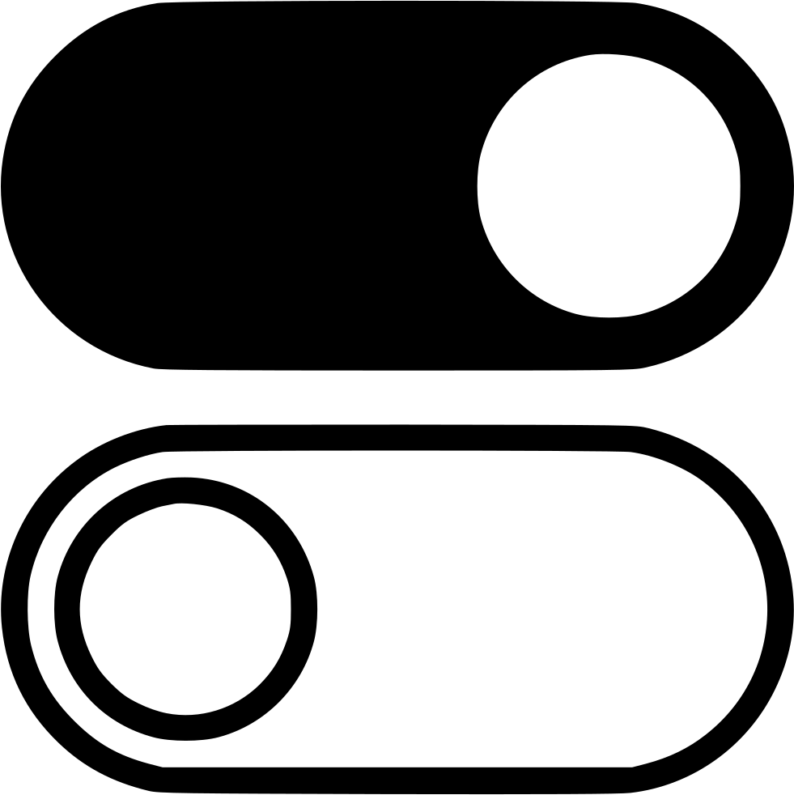
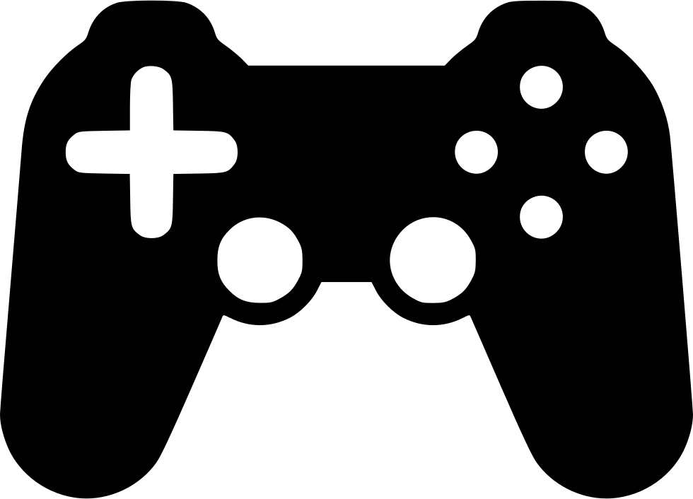
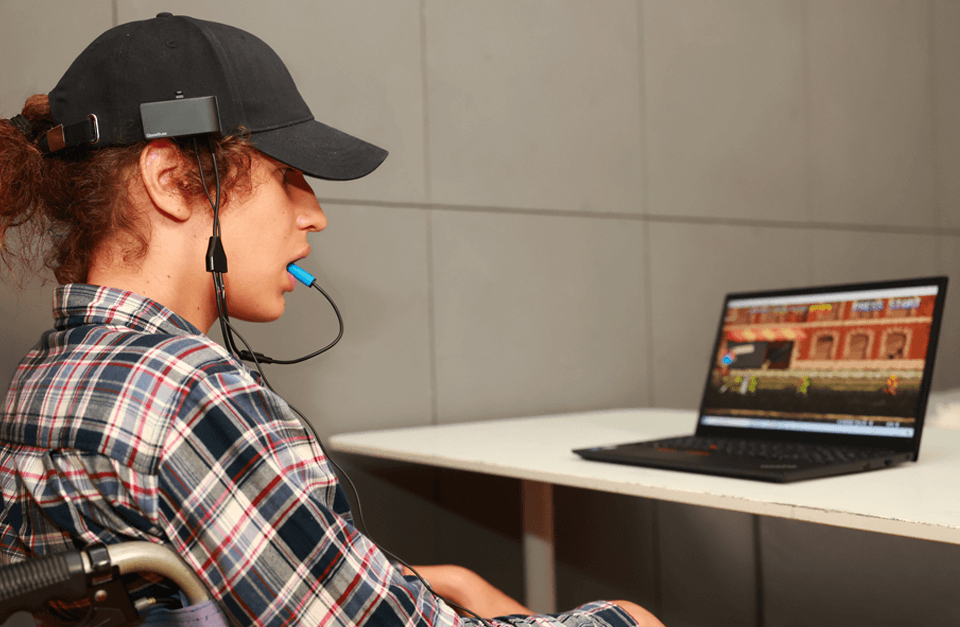
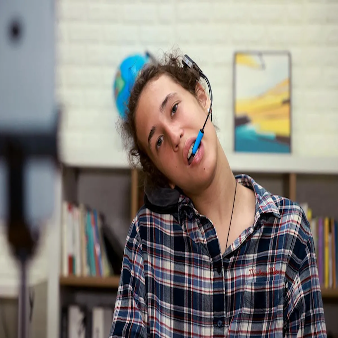

Inicio
GlassOuse es un dispositivo de asistencia de próxima generación 3 en 1 diseñado especialmente para personas con discapacidad para permitirles conectar y controlar múltiples dispositivos.
Se puede utilizar de diferentes maneras:
Ratón

Un ratón de cabeza Bluetooth giroscópico de 9 ejes mejorado que
rastrea el movimiento de la cabeza con una precisión de píxeles
perfecta en su teléfono móvil, computadora, tableta o Smart TV.
Experimente la conectividad de múltiples interruptores para hacer
clic y desplazarse.
Accessorio Switch Control

Un compañero perfecto para su dispositivo, incorporado 'Switch Control',
especialmente para personas con movilidad muy restringida.
Utilice el movimiento (arriba, abajo, izquierda, derecha) y los interruptores
de asistencia múltiple para realizar múltiples gestos para controlar su dispositivo.
Joystick

Haga de su GlassOuse un controlador de juegos y juegue con interruptores adaptativos
y movimientos giroscópicos. Utilice la aplicación GlassOuse para asignar las funciones
del controlador de juegos a sus interruptores de asistencia.
Datos
Compacto, ligero y poderoso.
Peso: 24g
Conectate a 3 dispoistivos a la vez
Con GlassOuse, puedes conectarte y controlar hasta 3 dispositivos y cambiar entre ellos fácilmente. GlassOuse guardará automáticamente la configuración de cada dispositivo y se activará cada vez que cambie a ese dispositivo.
Multitarea con 8 conexiones de interruptores de asistencia
GlassOuse cuenta con conectividad de interruptores multiadaptativos, lo que le permite realizar más acciones con los interruptores. Estos se pueden modificar para cambiar la función de cualquier interruptor en cualquier modo para todos los dispositivos conectados.
Accesorios
Elije tu accesorio G-wear para combinar con tu Glassouse
Elige entre 6 accesorios diferentes para usar tu GlassOuse. Todos los accesorios están diseñados sistemáticamente para poder acomodarse a la mayoría de las personas con una discapacidad diferente, para poder usar GlassOuse con comodidad.
G-FRAMEWEAR
Al igual que unas gafas normales, puedes usar G-framewear sobre tu frente y colocar GlassOuse a ambos lados del cierre. La longitud frontal se puede ajustar para que sea más firme y cómodo mientras se usa. También se puede usar fácilmente sobre las gafas regulares. Sus patillas hacen que sea fácil de transportar y están hechos de ABS endurecido pero elástico, lo que lo hace altamente flexible.
G-HEADBAND
G-Headband se usa sobre la cabeza con GlassOuse unido a su cierre. Se puede usar desde ambos lados. Ambos extremos vienen con un protector de esponja para un agarre reconfortante durante largas horas de uso. La longitud de la banda se puede ajustar según sea necesario simplemente tirando o empujando hacia adentro.
G-CAP
Como cualquier otra gorra regular. G-Cap permite al usuario conectar su GlassOuse a su cierre y usarlo. Además del uso regular, si decide usar GlassOuse en exteriores, G-Cap será un accesorio perfecto para acompañar su GlassOuse.
G-BEANIE HAT
De lana y cómodo, el sombrero G-Beanie es tu compañero perfecto para el clima invernal. Simplemente engancha tu GlassOuse a el cierre y estará listo para comenzar.
G-STRAP SMALL
Es una banda elástica gruesa, suave y cómodo al tacto. Engancha GlassOuse a el cierre, y listo. Es bueno si estás buscando usar GlassOuse adherido a tus brazos, manos o incluso piernas. Si elige usar GlassOuse desde tu cama, esto te ayudará a mantenerlo adherido a tu cuerpo. La longitud es ajustable.
G-STRAP BIG
Es una banda elástica gruesa, suave y cómoda al tacto. Engancha GlassOuse a el cierre y listo. Es bueno si estás buscando usar GlassOuse adherido a tus manos o piernas. Si quieres usar GlassOuse desde tu cama, esto te ayudará a mantenerlo adherido a tu cuerpo. La longitud es ajustable.
Experiencias
Nataly Pesso
Cuando tienes una discapacidad como la mía, que no te permite mover las manos, la tecnología a la que tienes acceso es lo que definirá tu calidad de vida. Estas gafas me permiten usar mi computadora o teléfono cuando estoy acostada en mi cama. Parece que es algo insignificante, pero antes de acostarme significaba tener que desconectar del mundo hasta el día siguiente.
Janey Carter

Se conectan a mi portátil a través de Bluetooth y, donde quiera que muevo la cabeza, el ratón me sigue. Luego, muerdo el 'interruptor de mordida' para hacer clic. ¡Los uso para administrar mi negocio, tomar cursos universitarios en línea, escribir blogs y mucho más! ¡Espero que alguien que realmente los necesite lo vea!
Luke Santos

Glassouse es indispensable desde el momento en que enciendo el ordenador hasta que lo apago. Se ha convertido en una extensión de mi cuerpo. Borra la palabra discapacidad y agrega CAPACIDAD en mi vida diaria. ¡Me da un nivel de independencia sin precedentes!